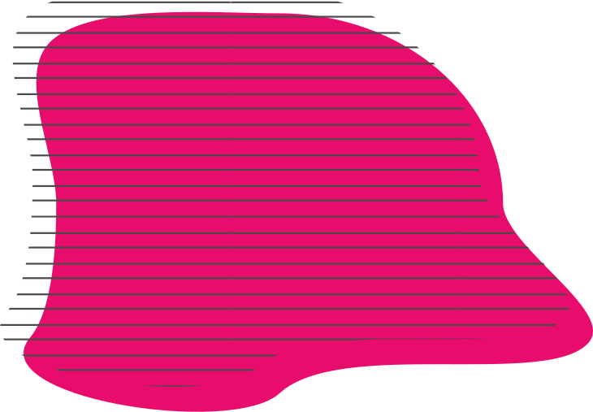
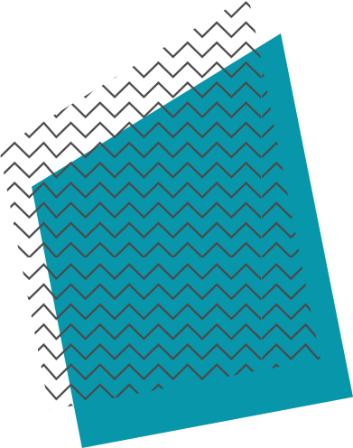
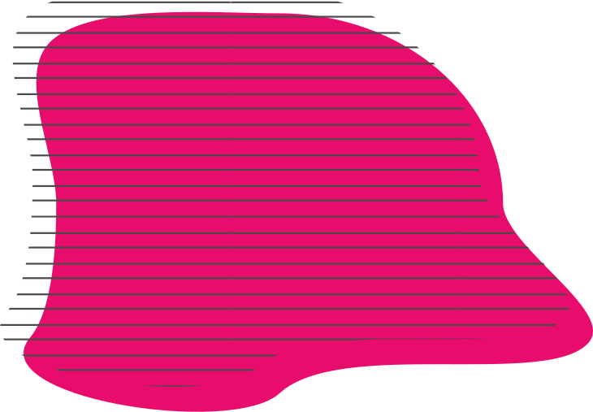
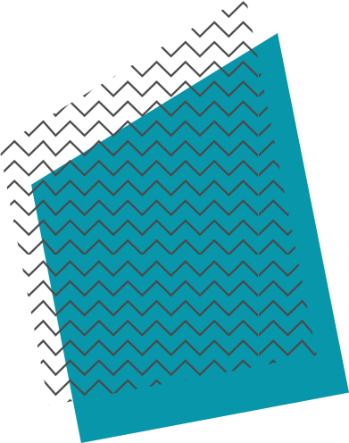
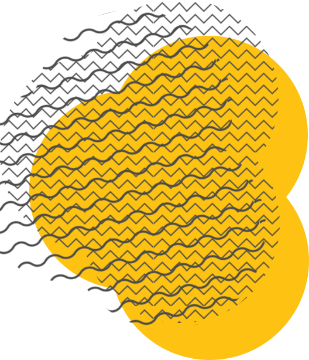
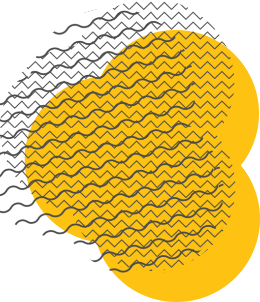

Design Repo
Logos
Our logo is our brand. These are the only logos we want to be using (for now...)
Try to use the SVGs where possible as they are super crisp. Use PNGs as a backup.
Primary Colours
These are key colours used across the brand and particularly in the web and mobile app.
#E80D6D Used in Calls to action Real Teal
#0896AB When highlighting a thing It's all navy
#284B52 Our primary font colour
Secondary Colours
These colours are not used quite as often but are still good to keep close.
#FFF Backgrounds, white space etc Go Green
#B0CC3B Injection of colour Yay Yellow
#FDC212 Injection of colour Our Grey
#9B9B9B Grey, the darker
#4A4A4A Grey, the light
#D9D9D9 Grey, the lighter
#EAEAEA
System Colours
Used for warnings, positive actions etc.
#18A957 Success Amber
#FFBB38 Warning Red
#DF1642 Negative
Typography
The font we use and love is Museo Sans Rounded.
Museo Sans Rounded Bold 700 Museo Sans Rounded Bold 700 Museo Sans Rounded SemiBold 500 Museo Sans Rounded SemiBold 500 Museo Sans Rounded Regular 300 Museo Sans Rounded Regular 300
Download the font pack here.
Graphics
This is a collection of slightly random SVG graphics that we used in our marketing material and in the platform. This is a small sample for now.
 



 

Download the graphic pack here.
Icons
Simple, lined icons. There's a lot of them!